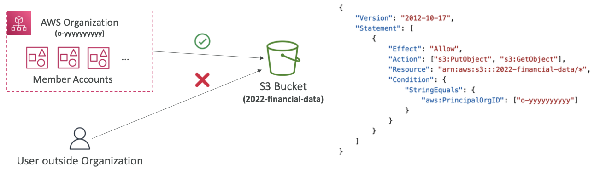

IAM + CLI
IAM (Identity and Access Management)
IAM is a web service that helps you securely control access to AWS resources. It allows you to manage users, groups, roles, and permissions.
Key Concepts:
- Users: Individual accounts for people or services that need access to AWS resources.
- Users do not have to belong to a group, however, that is not best practice.
- Users can belong to multiple groups.
- By Default, a root account is created. This account should not be used or shared!
- Groups: Collections of users that can be managed together. Groups only contain users, not other groups.
- Roles: Sets of permissions that can be assumed by users or services.
- Permission sets that allow for temporary credentials - avoiding long-term access keys and thus improving security.
- Permissions that allow AWS Services to perform certain actions on the Users' behalf.
- Common Use Cases:
- EC2 Instance Roles
- Lambda Function Roles
- Roles for CloudFormation
- Cross-Account Access Roles
- Policies: JSON Documents that define permissions and can be attached to users, groups, or roles.
- Least Privilege Principle: giving a user, service, or system only the minimum permissions required to perform their tasks — and nothing more.
- AWS has thousands of pre-built policies that apply to most common use cases. You can also create custom JSON policies for unique cases.
- Policies attached to groups propagate down to the users. Best practice is to assign permissions at the group level (instead of user level).
- In-Line Policies: policies assigned directly to a user.
- Contents of a Policy:
- Version: policy language version - always include "2012-10-17"
- Id: an identifier for the policy (optional)
- Statement: one or more individual statements (required)
- Sid: an identifier of the statement (optional)
- Effect: whether the statement allows or denies access (Allow, Deny)
- Principal: account/user/role to which this policy applied to
- Action: list of actions this policy allows or denies
- Resource: list of resources which the actions applied to
- Condition: conditions for when this policy is in effect (optional)
- Policy Evaluation Logic
- Permission Boundaries
- Advanced feature to use a managed policy to set the max permissions an IAM entity can get
- supported for users and roles but not groups.
- At a high level, boundaries set the outermost limit an IAM account can perform and then additional policies further refine what can be done.
- Can be used in combinations with SCPs
- Evaluation Flow Diagram
- Password Policies: a policy that can be placed to increase the security of accounts.
- Can enforce minimum password lengths, specific character types, password expiration dates, and prevent password re-use
- Helpful against brute force attacks on aws accounts
- MFA (Multi-Factor Authentication): An additional layer of security that requires users to provide two or more verification factors to gain access to AWS resources.
- MFA = password + security device you own
- Device Options:
- Virtual MFA Device - google authenticator (phone only), Authy (phone only)
- Universal 2nd Factor (U2F) Security Key - Yubikey by Yubico
- This is a physical device that can support for multiple root and IAM users using a single key
- Hardware Key Fob MFA Device
- Hardware Key Fob MFA Device for AWS GovCloud
- Security Tools: services designed to help protect your AWS environment by monitoring threats, enforcing security policies, identifying vulnerabilities, and ensuring compliance with industry standards.
- IAM Credentials Report: report that lists account users and the status of their credentials. This is done at the account level.
- IAM Advisor Access: show service permissions granted to a user and when those services were last accessed. Helps identify services not used and reinforce the principal of least privilege.
- Organizations: A global service that allows for multi-account management.
- Features:
- Centralized Billing across multiple accounts with one single payment method
- Volume pricing discounts are shared across all accounts in the organization
- Shared reserved instances and savings plans discounts across accounts.
- The main account is the management account and the accounts created thereafter are the member accounts
- Management account has full control over member accounts
- Member accounts can be invited or created, but can only exist in one organization
- API is available to automate the account creation process
- Organizational Units (OUs) allow for grouping of accounts to apply policies
- The main OU is the root, and there can be an unlimited amount of sub OU's
- Advantages:
- Having multiple accounts allows for better security - instead of using one account with multiple VPCs (accounts are more secure and separate than VPCs).
- Enforce Tagging Standards (for billing purposes)
- Standardize tags across resources in a specific organization used to ensure consistent tagging and audit tagged resources.
- Helps for Cost Allocation Tags and Attribute based Access Control.
- Prevent any non-compliant tagging operations
- Can generate a report that lists all tagged & untagged resources.
- Note: To monitor non-compliant tags use EventBridge.
- Exam Tip: maintaining tag consistency across accounts -- TAG POLICIES!
- Enable CloudTrail on all accounts & send logs to a central s3 account OR send cloudwatch logs to central logging account.
- Easily Establish Cross Account Roles for Admin purposes.
- Service Control Policies (SCPs)
- Policies applied to OU or acccounts to restrict Users and Roles
- They do not apply to the management account
- Note: there must be an explicit allow from the root through each OU in the direct path to the target account. By default, nothing is allowed.


AWS CLI (Command Line Interface)
The CLI is another way users can access AWS through the Command Line, and it is protected by access keys.
- Access Keys: long-term credentials used to authenticate programmatic requests to AWS services. They consist of an Access Key ID (similar to a username) and Secret Access Key (similar to a password).
- Outside of the CLI, Access Keys can be used in Software Development Kits, Direct API Calls, and applications or scripts that need to access AWS Resources.
- Exam Callouts:
- Access Keys grant the same permissions as the IAM user they belong to
- Keys should be protected and rotated regularly -- NEVER STORED IN CODE
- Use IAM Roles instead of keys whenever possible
- Keys should never be created from the Root User
- Keys can be active, inactive, or deleted via IAM
AWS SDK (Software Development Kit)
The AWS SDK is a collection of tools and libraries that allow developers to interact with AWS services using various programming languages.
- Enables programmatic access to AWS Resources
- Embedded within your application (not through the command line)
AWS Cloudshell
AWS CloudShell is a browser-based, pre-authenticated shell environment that lets you run AWS CLI commands without installing anything on your local machine. It automatically uses your current IAM credentials and provides a secure, managed terminal directly inside the AWS Console. Cloudshell is a CLI alternative - it is NOT available in all regions but it is FREE to use.
- Features:
- Fully managed
- Pre-authenticated with your current IAM user permissions
- No need to manually configure access keys or credentials
- Comes with a full repository - 1 GB of persistent storage per region (files exist after the shell is closed/terminated)
- Can be configured to user preference
- Can upload/download files into the cloudshell
IAM Identity Center (successor to AWS Single Sign-On)
Service that provides a single sign on for all aws accounts, business cloud apps (e.g. Salesforce, M365, etc), SAML2.0-enabled applications, and EC2 Windows Instances.
- Identity Providers (where the users are stored) can be the built-in identity store in the IAM Identity Center or you can connect to a third-party provider
- Permission Sets:
- template that you create and maintain that defines a collection of one or more IAM policies.
- simplify the assignment of AWS account access for users and groups in your organization.
- Fine-grained Permissions and Assignments
- Multi-Account Permissions
- Application Assignments - SSO access, provides required URLs, certs, and metadata
- Attribute Based Access Control (ABAC) - create permission sets using tags to control access
- Fine grained permissions based on users' attributes stored in the identity store.
- Example: allow access to resources only if the user's department tag matches the resource's department tag.
Advanced Concepts
- IAM Conditions
- aws:SourceIP
- restricts the client IP from which the API calls are being made.
- aws:RequestedRegion
- restricts the region the API calls are made to.
- aws:PrincipalTag/Department
- restricts access based on tags associated with the IAM principal (user or role).
- aws:MultiFactorAuthPresent
- requires MFA to be used for access.
- ec2:ResourceTag
- restricts access to EC2 resources with specific tags.
- NOTE: Object level permissions will have different tags than Bucket Level Permissions
- Ex: Bucket Level arn -- arn:awss3:::test | Object Level arn -- arn:awss3:::test/* (* = access to every object)
- aws:PrincipalOrgID
- Restrict access to accounts that are members of an AWS Organization. 
- Roles vs Resource Based Policies
- Accomplish the roughly the same thing but there is a difference
- Roles forfeit the original permissions and assume what is defined in the role.
- Resource Based Policies add to the existing permissions of the user.
- Supported by resources such as S3, SNS Topics, SQS queues, and more.
- Example: User in account A needs to grab an object in an S3 bucket and dump it in an S3 bucket in Account B.
- This comes into play when using EventBridge --
- When a rule runs, it needs permissions on the target. If the target supports resource based policies, EventBridge will add a resource-based policy on the target.
- If the target does NOT support resource-based policies, EventBridge will use an IAM role to invoke the services of the target.
- AWS Active Directory:
- AWS Directory Service is a managed service that allows you to set up and run Microsoft Active Directory (AD) in the AWS Cloud or connect your AWS resources with an existing on-premises AD.
- Database of objects Users, Computers, Printers, File Shares, etc
- Objects are organized in trees and a group of trees is a forest
- Three Flavors of services:
- AWS Managed Microsoft AD
- create your own AD in AWS, manage users locally and supports MFA. Establish trust connections with your on-premise AD
- AD Connector
- Proxy service that connects AWS services with your on-premise AD. No user management in AWS.
- Simple AD
- Basic AD features with no trust relationships. Limited to 5000 objects. User management in AWS.
- IAM Identity Center - Active Directory Setup
- Connects IAM Identity Center to your Active Directory
- Allows users to sign in to the AWS SSO user portal with their AD credentials
- Connecting to a self-managed directory --> create a two trust relationship using AWS Managed Microsoft AD or Create an AD Connector
- AWS Control Tower
- Automated landing zone setup for multi-account AWS environments
- Implements best practices for security and compliance
- Includes pre-configured blueprints for account structure, network design, and security policies
- Integrates with AWS Organizations for centralized account management
- Monitor compliance through an interactive dashboard.
- Guardrails:
- A control (sometimes called a guardrail) is a high-level rule that provides ongoing governance for your overall AWS environment.
- Three types of guardrails:
- Preventive: using SCPs to apply them to all accounts
- Detective: uses AWS Config service (e.g identify untagged resources)
- Proactive
- Three categories of guidance apply to controls(guardrails): strongly recommended, or elective.